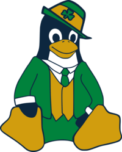

|
→ |
 |
First, we thank the outgoing Notre Dame Linux Users Group officers for all their hardwork last year!
President Emeritus: Nolan McShea (aka Nuolong), Computer Science.
Vice President Emeritus: Paul Gierl (aka itspaulyg), Computer Science.
SysAdmin Emeritus: Tom Faughnan (aka deckard), ACMS.
We also congratulate our other graduating Senior members:
Gerry Fernandez (aka gfernan2)
Erik Meier (aka erik)
Simon Rodriguez (aka srodrig)
Finally, we welcome the new incoming officers for the 2022-2023 school year:
President: John Sullivan (aka jsull), Senior, Computer Science.
Vice President: Daniel Blittschau (aka dblitt), Sophomore, Computer Science.
Secretary: Sebastian Gutierrez (aka sebmaster36), Senior, Computer Science.
Treasurer: Anna Klempay (aka alkie), Junior, Computer Science.
Media Relations: Selina Nie (aka snie), Senior, Computer Science.
The goal of the new administration is to continue the revitalization work of the previous regime and to maintain the fun and supportive environment at the heart of the Notre Dame Linux Users Group.